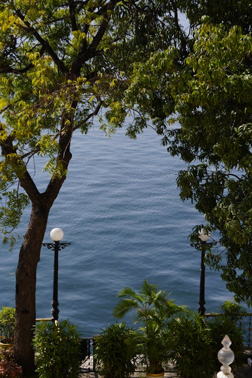
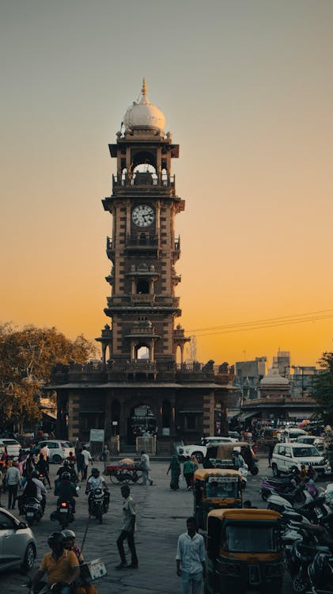
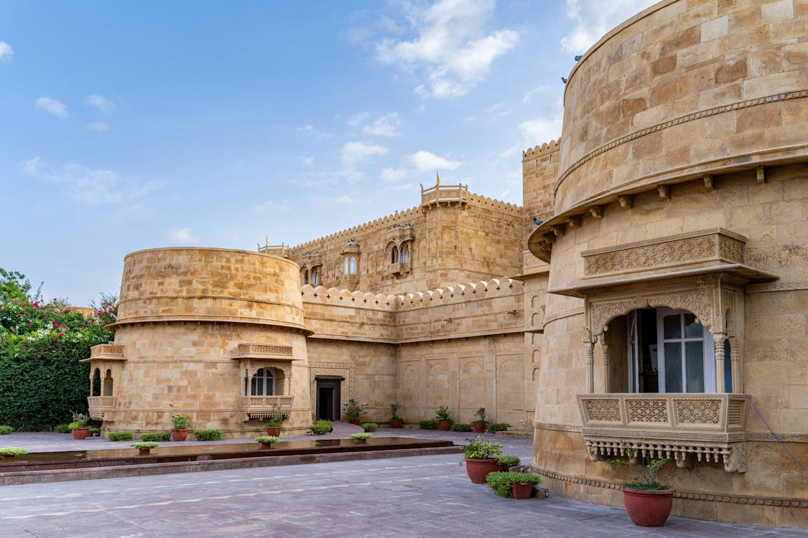
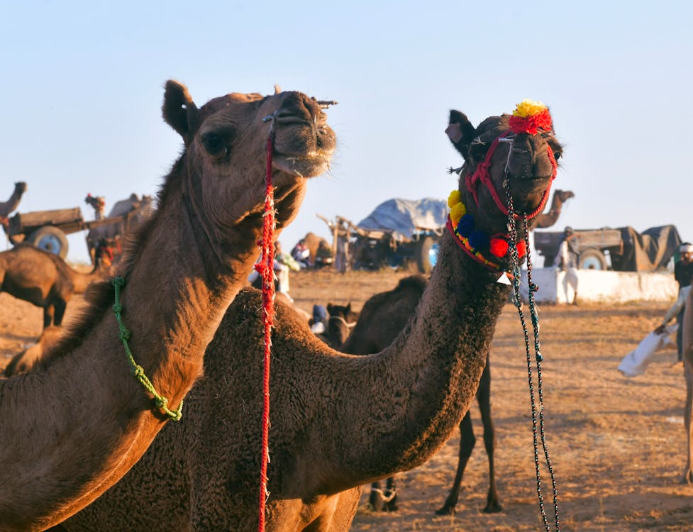
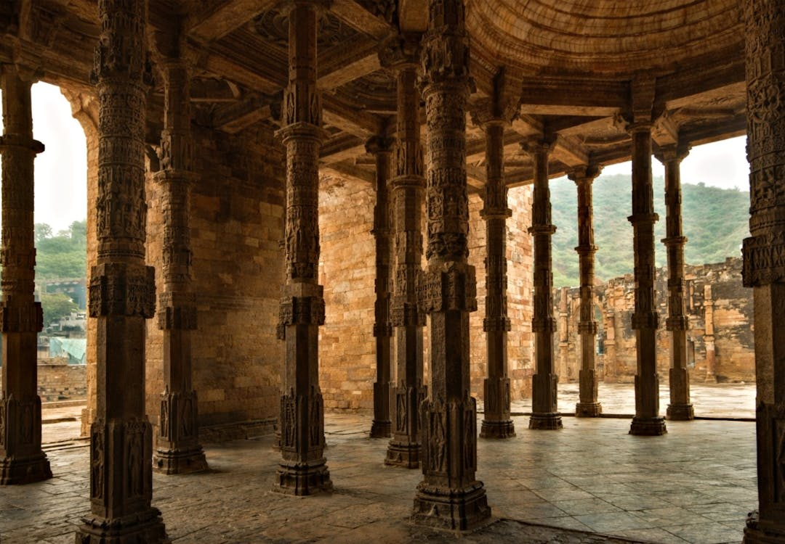
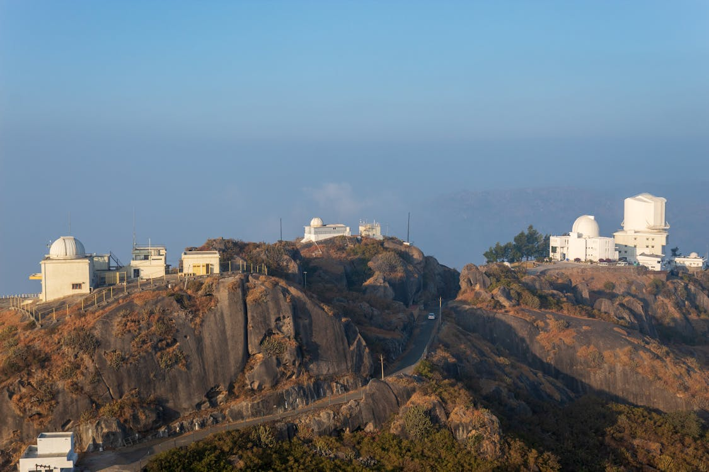
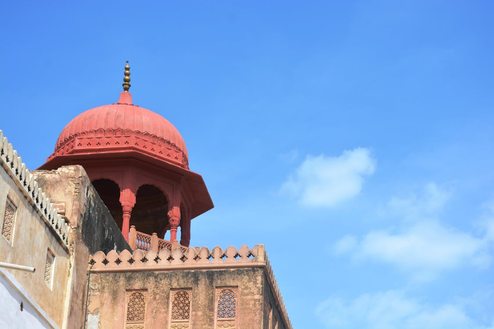
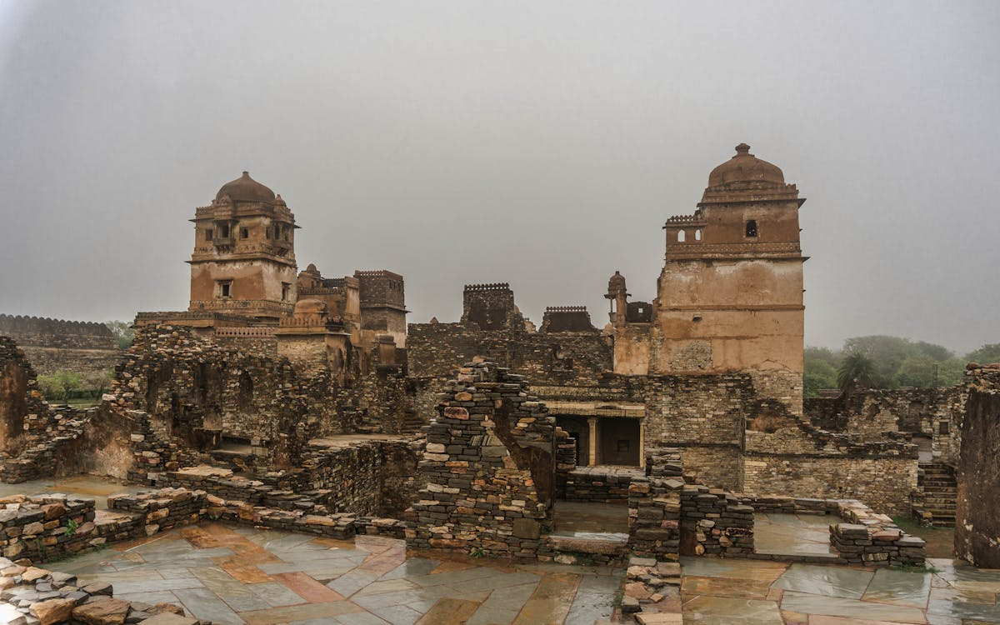

Rajasthan
The Land of Kings - Heritage, Valour, and Royalty.
The Land of Kings - Heritage, Valour, and Royalty.
Discover the majestic forts, vibrant culture, and timeless deserts of Rajasthan.
The 'Pink City' known for its magnificent Hawa Mahal and historic forts.
Explore Jaipur
The 'City of Lakes' offering romantic palaces and serene water bodies.
Explore Udaipur
The 'Blue City' dominated by the imposing Mehrangarh Fort.
Explore Jodhpur
The 'Golden City' in the heart of the Thar Desert, famous for its golden fort.
Explore Jaisalmer
A holy town centered around a sacred lake and the rare Brahma Temple.
Explore Pushkar
Famed for the Ajmer Sharif Dargah, a major pilgrimage site for all faiths.
Explore Ajmer
Rajasthan's only hill station, known for the Dilwara Jain Temples & Nakki Lake.
Explore Mount Abu
Famed for its imposing Junagarh Fort and the unique Karni Mata Temple.
Explore Bikaner
Home to India's largest fort, a symbol of Rajput valour and sacrifice.
Explore Chittorgarh
A premier tiger reserve and home to one of the most scenic hill forts in India.
Explore Ranthambore